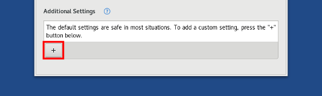

What captive portals are
Many publicly accessible Internet connections (usually available through a wireless network connection) require users to sign in to the network using a captive portal in order to access the Internet.
A captive portal is a web page that is displayed to the user before the user can access the Internet. Captive portals usually require the user to log in to the network or enter information such as an email address. Captive portals are commonly encountered at Internet cafés, libraries, airports, hotels, and universities.
This is an example of a captive portal (by AlexEng):
{kind=link}

Tor cannot start when the Internet connection is initially blocked by a captive portal. That is why Tails includes an Unsafe Browser to sign in to a network using a captive portal before starting Tor.
Security implications of the Unsafe Browser
For better security, the Unsafe Browser is disabled by default because:
The Unsafe Browser is not anonymous.
The Unsafe Browser does not use Tor. The websites that you visit can see your real IP address.
This is why we recommend that you:
- Only use the Unsafe Browser to sign in to a network using a captive portal or browse trusted web pages on the local network.
- Close the Unsafe Browser after signing in to the network, to avoid using it by mistake.
The Unsafe Browser can be used to deanonymize you.
An attacker could exploit a security vulnerability in another application in Tails to start an invisible Unsafe Browser and reveal your IP address, even if you are not using the Unsafe Browser.
For example, an attacker could exploit a security vulnerability in Thunderbird by sending you a phishing email that could start an invisible Unsafe Browser and reveal them your IP address.
Such an attack is very unlikely but could be performed by a strong attacker, such as a government or a hacking firm.
This is why we recommend that you:
- Only enable the Unsafe Browser if you need to sign to a network using a captive portal.
- Always upgrade to the latest version of Tails to fix known vulnerabilities as soon as possible.
We have plans to fix the root cause of this problem but it requires important engineering work.
Using the Unsafe Browser
To start the Unsafe Browser:
When the Welcome Screen appears, click on the
 button.
button.
Choose Unsafe Browser in the Additional Settings dialog.
Select the Enable the Unsafe Browser option.
Click Start Tails.
In Tails, choose Applications ▸ Internet ▸ Unsafe Browser.
To sign in to a network using a captive portal:
Try visiting any website using the Unsafe Browser.
Choose a website that is common in your location, for example a search engine or news site.
You should be redirected to the captive portal instead of the website.
After you signed in to the network, Tor should start.
After Tor is ready, close the Unsafe Browser.
You can use Tor Browser and any other application as usual.
To always enable the Unsafe Browser, turn on the Welcome Screen feature of the Persistent Storage.
If you download files using the Unsafe Browser it is not possible to access them outside of the Unsafe Browser itself.